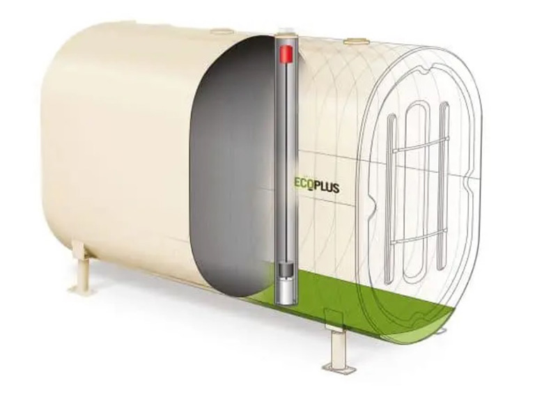

Heating Oil Tank Replacement, Installation, and Repair | What You Need to
Know
Oil Tank Installation
Oil Tank Sizes
The first thing to consider when looking at oil tank replacement or
installing a new oil tank is the size you need. There are two major factors
in this decision: consumption rate and reliability of supply. There are
issues with choosing the wrong size. For example, when an installed or
replaced tank is too small, the furnace could run dry. This leads to
equipment damage and can result in ineffective heating through cold periods.
Because of this, securing a reliable supply is important to ensure you don’t
go days without heating. When negotiating supply, make sure to include
provisions for regular maintenance. That way, you avoid having wasted fuel.
It is good to maintain at least a quarter of a tank worth of fuel at all
times. To read more about checking how much fuel you have, read
our post
about oil tank charts.

Oil Tank Types
The type of oil tank you have influences the issues you might face
maintaining or replacing it. There are various types of oil tanks: plastic
vs. steel tanks, indoor vs. outdoor vs. underground tanks. Even the
layering can be variable – there are single-skin, double skin and bunded
tanks. A bunded tank means a tank within another, slightly larger tank.
The complexity of tank categories means it is best to enlist the help of
an expert to replace or maintain it.
Oil Tank Maintenance
For above-ground tanks, there are several recommended maintenance
tanks.
Check Integrity
Make sure tank legs are not eroded, bent, or rusted, and the leg brackets
aren’t cracked or detached. Verify the structural integrity of the tank’s
platform as well.
Touch the tank and its connectors to detect rust or deformities, as well
as around the drain. Any black coloring on the tank likely means there is
water leaking into it. If you see darkening, check the connecting pipes
for drips. Similarly, check the filters and valves.
Any of these signs mean you should call a professional for oil tank
maintenance or oil tank replacement.
Check Control Mechanisms
If the tank is operating properly, the vent whistle should make noises
while the tank is being filled. The oil tank gauge will reflect increasing
levels as the oil is used up. If the gauge is cracked or loose, call a
professional to take a look at your system. Again, you could be looking at
oil tank replacement.
Oil Tank Protection
An outdoor tank should be protected from strong winds and heavy
precipitation. Clear the area of nearby trees so branches don’t crush the
tank. The tank should be fenced off to avoid damaging hardware such as
lawnmowers accidentally running over it. The screens on the tank’s vents
are extremely important – make sure they aren’t damaged or missing.
An underground tank is harder to check yourself – this is why it is
important to have covenants with your heating oil supply company to
include maintenance. Just because an aboveground tank is easier to check
doesn’t mean you don’t need maintenance, as expert eyes make sure you
don’t accidentally miss something..
Having additional maintenance might increase the expense of your
contract, but is still financially worth it in the long run. Oil tank
repair can be expensive. Oil tank replacement is even more costly. Making
sure your oil tank is maintained by yourself and a professional saves you
the large expense of your oil tank replacement caused by failure.
Oil Tank Cleaning
Pollutants naturally build up in tanks, leading to condensation forming
on the inside of tanks and water getting trapped. The oil in your tank
sits on top of the water build up (as oil floats on water) and cleaning is
imperative to resolve this issue. The water, over time, will corrode your
tank and require oil tank replacement.
Tank corrosion are primarily bad because they cause leaks. Sludge settles
in the bottom of the tank. This sludge can be piped out from the outlet
pipe and make its way to your furnace. The mixture of metal and water
damages furnaces and blocks your filters and valves. All of these increase
repair costs and could even lead to oil tank replacement.
It is important to get your oil tank cleaned regularly. Cleaning should
occur around once every five years – the process can be convoluted since
the contents of the tank need to be pumped out. This task can generally be
carried out by your oil provider.
Other Considerations
Installing Oil Tanks
Oil Tank Leak Repair
Oil Tank Protection Plans